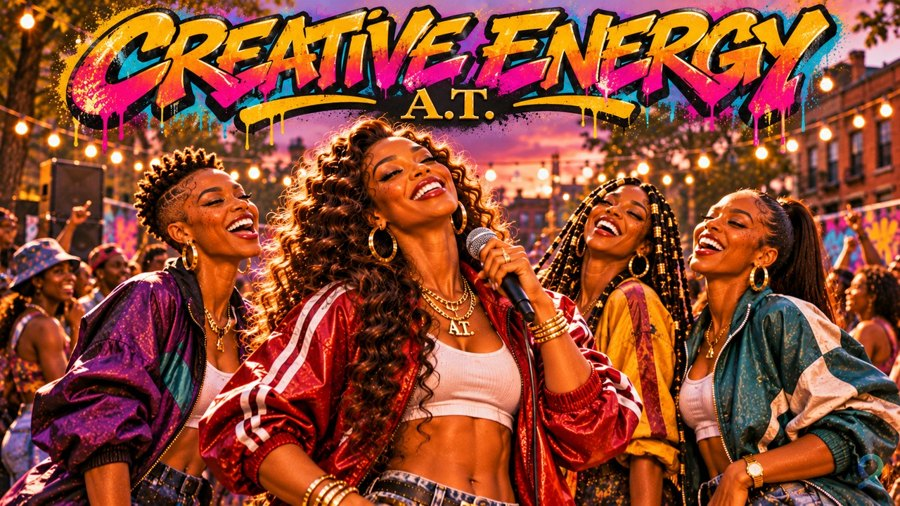

Track 03 · My Turn
Creative Energy
Creative energy needs somewhere to go. Leave it sitting on the shelf and it turns into worry; give it a job and it turns into life. So A.T. and her girls give it everything: the skate park, a paint and wine class, four wheelers in the desert, a clay studio, a paintball war, and a block party that goes all night.
 Watch the official video
Watch the official video
Lyrics
[Intro]
Yeah...
Blow the dust off this one.
Sat on the shelf too long.
Let's give it somewhere to go.
[Verse 1]
Had a beat on the shelf, let it sit for a week,
Told myself I need a spark 'fore I open up and speak,
Kept the tap turned off, then I wondered why it's dry,
Asked the sky for a sign while my pen just sat by.
Scrolled through other people's fire till my thumbs went numb,
Said "I'm not ready yet" like ready ever comes,
Nobody locked the door, nobody stole the key,
Every day I didn't make it, I was closing it on me.
It ain't punishment, baby, it's plumbing, it's math,
Water don't run through a pipe with a cap,
Why would it send me more when I'm sitting on plenty?
Got a closet full of nights and a notebook half empty.
So I'm blowing off the dust, putting needle to the wax,
Every rhyme I held back, now I'm cashing in the stacks,
I had the order mixed up, thought the feeling came first,
Now I move and it follows, every bar, every verse.
[Hook]
Give it somewhere to go! (Go!)
What you don't use, you lose, so let it flow,
Every idea in your chest, let 'em know,
Creative energy, give it somewhere to go!
Build it, write it, give it, show it,
Open up the channel, can't keep it if you hold it,
What you feed stays alive, that's the code,
Creative energy, give it somewhere to go!
[Verse 2]
Here's the part they don't tell you when you sitting on a gift,
That the fire don't vanish, it just picks another shift,
Same mind that could build you a house out of bars,
Gonna build you a nightmare if you leave it in park.
Overthinking's just a motor running hot with no road,
Every worry is a story that you wrote with no goal,
"It's not possible for me," that's a program, that's code,
Somebody wrote that script, I'm rewriting it bold.
Caught my fear in the corner building castles of doubt,
Handed it a blueprint, said "now build me a route",
All the rent that was late, all the nights on the floor,
That ain't damage, that's material, I'm stocked in the store.
Every job that I worked, every no that I heard,
Every lesson I learned getting turned into words,
Give it from the overflow, not out of the drought,
What I lived is the fuel, now I'm pouring it out.
[Hook]
Give it somewhere to go! (Go!)
What you don't use, you lose, so let it flow,
Every idea in your chest, let 'em know,
Creative energy, give it somewhere to go!
Build it, write it, give it, show it,
Open up the channel, can't keep it if you hold it,
What you feed stays alive, that's the code,
Creative energy, give it somewhere to go!
[Break]
My attention is a spoon, so I'm careful what I serve,
Feed the doubt and it gets fat, feed the art and it gets heard,
Whatever I feed stays alive...
Whatever I feed stays alive!
[Verse 3]
I'm a channel, for real, ain't nothing in me still,
I only come alive when I'm making something real,
The more that I give, the more come through the pipe,
Same law for the man working doubles every night.
Built a catalog in the gaps between the shifts and the sleep,
Turned the hours nobody wanted into something to keep,
Money don't come to the ones sitting tight,
It comes down the river when the river's moving right.
So give first, give loud, give it all from the chest,
Turn the tap all the way, let the current do the rest,
Not a wish, it's a habit, every day I report,
Every page that I fill makes the dry season short.
Dust off what you got, put it out in the air,
And the flow finds you back 'cause you finally showed up there,
What you give is what grows, what you starve is what goes,
Creative energy, baby, give it somewhere to go!
[Final Hook]
Give it somewhere to go! (Go!)
What you don't use, you lose, so let it flow,
Every idea in your chest, let 'em know,
Creative energy, give it somewhere to go!
Build it, write it, give it, show it,
Open up the channel, can't keep it if you hold it,
What you feed stays alive, that's the code,
Creative energy, give it somewhere to go!
[Outro]
Creative energy...
Whatever you feed stays alive.
So feed the right thing.
Grey Beard On the Track!
Written by Grey Beard and A.T. ℗ & © 2026 Threadia AI, Inc. All rights reserved.